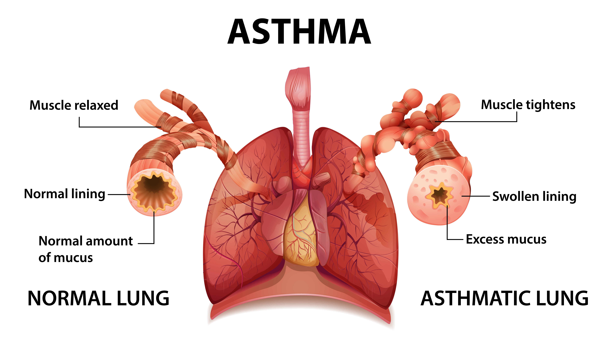
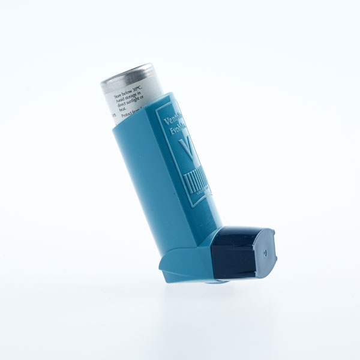

Asthma is a condition in which your airways narrow and swell and
may produce extra mucus. This can make breathing difficult and trigger
coughing, a whistling sound (wheezing) when you breathe out and shortness of breath.
For some people, asthma is a minor nuisance. For others, it can be
a major problem that interferes with daily activities and may lead to a life-threatening asthma attack.
Asthma can't be cured, but its symptoms can be controlled. Because
asthma often changes over time, it's important that you work with your doctor
to track your signs and symptoms and adjust your treatment as needed.

Airways constricted during an asthma attack

Common asthma inhaler
×

Symptoms
Asthma symptoms vary from person to person.
You may have infrequent asthma attacks, have symptoms only at certain times —
such as when exercising — or have symptoms all the time.
Asthma signs and symptoms include:
- Shortness of breath
- Chest tightness or pain
- Wheezing when exhaling, which is a common sign of asthma in children
- Trouble sleeping caused by shortness of breath, coughing or wheezing
- Coughing or wheezing attacks that are worsened by a respiratory virus, such as a cold or the flu
Signs that your asthma is probably worsening include:
- Asthma signs and symptoms that are more frequent and bothersome
- Increasing difficulty breathing, as measured with a device used to check how well your lungs are working
(peak flow meter)
- The need to use a quick-relief inhaler more often
For some people, asthma signs and symptoms flare up in certain situations:
- Exercise-induced asthma, which may be worse when the air is cold and dry
- Allergy-induced asthma, triggered by airborne substances, such as pollen, mold spores, cockroach
waste, or particles of skin and dried saliva shed by pets (pet dander)
-
Occupational asthma, triggered by workplace irritants such as chemical fumes, gases or dust
Diagnosis of Asthma
Physical Exam
Your doctor will perform a physical exam to rule out other possible conditions, such as a respiratory infection
or chronic obstructive pulmonary disease (COPD). Your doctor will also ask you questions about your signs and
symptoms and about any other health problems.
Tests to Measure Lung Function
You may be given lung function tests to determine how much air moves in and out as you breathe. These tests may
include:
-
Spirometry
This test estimates the narrowing of your bronchial tubes by checking how much air you can exhale after a
deep breath and how fast you can breathe out.
-
Peak Flow
A peak flow meter is a simple device that measures how hard you can breathe out. Lower than usual peak flow
readings are a sign that your lungs may not be working as well and that your asthma may be getting worse.
Your doctor will give you instructions on how to track and deal with low peak flow readings.
-
Bronchodilator Response
Lung function tests often are done before and after taking a medication to open your airways called a
bronchodilator (such as albuterol). If your lung function improves with the use of a bronchodilator, it's
likely you have asthma.
Additional Tests
Other tests to diagnose asthma include:
-
Methacholine Challenge
Methacholine is a known asthma trigger. When inhaled, it will cause your airways to narrow slightly. If you
react to the methacholine, you likely have asthma. This test may be used even if your initial lung function
test is normal.
-
Imaging Tests
A chest X-ray can help identify any structural abnormalities or diseases (such as infection) that can cause
or aggravate breathing problems.
-
Allergy Testing
Allergy tests can be performed by a skin test or blood test. They tell you if you're allergic to pets,
dust, mold, or pollen. If allergy triggers are identified, your doctor may recommend allergy shots.
-
Nitric Oxide Test
This test measures the amount of the gas nitric oxide in your breath. When your airways are inflamed — a
sign of asthma — you may have higher than normal nitric oxide levels. This test isn't widely available.
-
Sputum Eosinophils
This test looks for certain white blood cells (eosinophils) in the mixture of saliva and mucus (sputum) you
discharge during coughing. Eosinophils are present when symptoms develop and become visible when stained
with a rose-colored dye.
-
Provocative Testing
In these tests, your doctor measures your airway obstruction before and after you perform vigorous physical
activity or take several breaths of cold air.
How Asthma is Classified
To classify your asthma severity, your doctor will consider how often you have signs and symptoms and how
severe they are. Your doctor will also consider the results of your physical exam and diagnostic tests.
Determining your asthma severity helps your doctor choose the best treatment. Asthma severity often changes
over time, requiring treatment adjustments.
Asthma Classification
| Asthma Classification |
Signs and Symptoms |
| Mild Intermittent |
Mild symptoms up to two days a week and up to two nights a month |
| Mild Persistent |
Symptoms more than twice a week, but no more than once in a single day |
| Moderate Persistent |
Symptoms once a day and more than one night a week |
| Severe Persistent |
Symptoms throughout the day on most days and frequently at night |
Treatment of Asthma
Prevention and long-term control are key to stopping asthma attacks before they start. Treatment usually
involves learning to recognize your triggers, taking steps to avoid triggers and tracking your breathing to make
sure your medications are keeping symptoms under control. In case of an asthma flare-up, you may need to use a
quick-relief inhaler.
Medications
The right medications for you depend on a number of things — your age, symptoms, asthma triggers and
what works best to keep your asthma under control.
Preventive, long-term control medications reduce the swelling (inflammation) in your airways that leads to
symptoms.
Quick-relief inhalers (bronchodilators) quickly open swollen airways that are limiting breathing. In some cases,
allergy
medications are necessary.
Long-term Control Medications generally taken daily, are the cornerstone of asthma treatment.
These medications keep asthma under control on a day-to-day
basis and make it less likely you'll have an asthma attack. Types of long-term control medications include:
- Inhaled corticosteroids: These medications include fluticasone propionate (Flovent HFA,
Flovent Diskus, Xhance),
budesonide (Pulmicort Flexhaler, Pulmicort Respules, Rhinocort), ciclesonide (Alvesco), beclomethasone (Qvar
Redihaler),
mometasone (Asmanex HFA, Asmanex Twisthaler) and fluticasone furoate (Arnuity Ellipta).You may need to use
these medications for several days to weeks before they reach their maximum benefit. Unlike oral
corticosteroids,
inhaled corticosteroids have a relatively low risk of serious side effects.
- Leukotriene modifiers: These oral medications — including montelukast (Singulair),
zafirlukast (Accolate)
and zileuton (Zyflo)— help relieve asthma symptoms.
Montelukast has been linked to psychological reactions, such as agitation, aggression, hallucinations,
depression and suicidal thinking.
Seek medical advice right away if you experience any of these reactions.
- Combination inhalers: These medications — such as fluticasone-salmeterol
(Advair HFA, Airduo Digihaler, others), budesonide-formoterol (Symbicort), formoterol-mometasone
(Dulera) and fluticasone furoate-vilanterol (Breo Ellipta) — contain a long-acting beta agonist
along with a corticosteroid.
- Theophylline: Theophylline (Theo-24, Elixophyllin, Theochron) is a daily pill that helps
keep the airways open by relaxing
the muscles around the airways. It's not used as often as other asthma medications and requires regular blood
tests.
Quick-relief Medications are used as needed for rapid, short-term symptom relief during an
asthma attack. They may also be used before exercise if your doctor recommends it. Types of quick-relief
medications include:
- Short-acting beta agonists:These inhaled, quick-relief bronchodilators act within minutes
to rapidly ease symptoms during an asthma attack. They include albuterol (ProAir HFA, Ventolin HFA, others)
and levalbuterol (Xopenex, Xopenex HFA).
Short-acting beta agonists can be taken using a portable, hand-held inhaler or a nebulizer, a machine that
converts asthma medications to a fine mist. They're inhaled through a face mask or mouthpiece.
- Anticholinergic agents: Like other bronchodilators, ipratropium (Atrovent HFA) and
tiotropium (Spiriva, Spiriva Respimat) act quickly to immediately relax your airways, making it easier to
breathe. They're mostly used for emphysema and chronic bronchitis, but can be used to treat asthma.
- Oral and intravenous corticosteroids: These medications — which include prednisone
(Prednisone Intensol, Rayos) and methylprednisolone (Medrol, Depo-Medrol, Solu-Medrol) — relieve airway
inflammation caused by severe asthma. They can cause serious side effects when used long term, so these drugs
are used only on a short-term basis to treat severe asthma symptoms.
If you have an asthma flare-up, a quick-relief inhaler can ease your symptoms right away. But you shouldn't
need to use your quick-relief inhaler very often if your long-term control medications are working properly.
Keep a record of how many puffs you use each week. If you need to use your quick-relief inhaler more often than
your doctor recommends, see your doctor. You probably need to adjust your long-term control medication.
Allergy Medications
Allergy medications may help if your asthma is triggered or worsened by allergies:
- Allergy shots (immunotherapy): Over time, allergy shots gradually reduce your immune system
reaction to specific allergens. You generally receive shots once a week for a few months, then once a month
for a period of three to five years.
- Biologics: These medications — which include omalizumab (Xolair), mepolizumab (Nucala),
dupilumab (Dupixent), reslizumab (Cinqair) and benralizumab (Fasenra) — are specifically for people who have
severe asthma.
Bronchial Thermoplasty
This treatment is used for severe asthma that doesn't improve with inhaled corticosteroids or other long-term
asthma medications. It isn't widely available nor right for everyone.
During bronchial thermoplasty, your doctor heats the insides of the airways in the lungs with an electrode. The
heat reduces the smooth muscle inside the airways. This limits the ability of the airways to tighten, making
breathing easier and possibly reducing asthma attacks. The therapy is generally done over three outpatient
visits.
Treat by severity for better control: A stepwise approach
Your treatment should be flexible and based on changes in your symptoms. Your doctor should ask about your
symptoms at each visit. Based on your signs and symptoms, your doctor can adjust your treatment accordingly.
For example, if your asthma is well controlled, your doctor may prescribe less medication. If your asthma isn't
well controlled or is getting worse, your doctor may increase your medication and recommend more-frequent
visits.
Asthma action plan
Work with your doctor to create an asthma action plan that outlines in writing when to take certain medications
or when to increase or decrease the dose of your medications based on your symptoms. Also include a list of your
triggers and the steps you need to take to avoid them.
Your doctor may also recommend tracking your asthma symptoms or using a peak flow meter on a regular basis to
monitor how well your treatment is controlling your asthma.